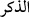
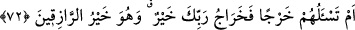

“Eğer” kerih gördükleri “hak” ve o cümleden olarak Hz. Peygamber (a.s.)’ın getirdiği
Kur’an “onların kötü arzu ve isteklerine” müşriklerin isteklerine uygun olarak gelmek
sûretiyle kâfirlerin arzularına “uysaydı, mutlaka gökler ve yer ile bunlarda
bulunanlar” melekler, insanlar ve cinler “bozulur giderdi.” Tamamen düzeni ve
intizamı kalmazdı. Çünkü düzenin dayanağı ve âlemin kendisiyle kâim olduğu şey haktan
başkası değildir. İslam, tevhid, adâlet ve benzerleri hak cümlesindendir.
Ku’an’ın onların isteklerine uygun gelmesi, sözü genişletmek ve mecâz olarak ‘uymak’
olarak ifâde edilmiştir.
Bâzıları der ki: “Allah nefislere muhâlefeti ve onlardan ayrı durmayı emretmeseydi,
insanlar hevâ ve şehvetlerine uyarlardı. Bunu yaptıkları takdirde de kulluk yolundan
sapar, Allah’ın emirlerini terk eder, O’na tâattan yüz çevirir ve O’na muhâlefette devam
ederlerdi. Hevâ kendisine uyanı cehennemin çukuruna (hâviye) atar.”
“Hayır, biz onlara şan ve şereflerini getirdik.” Bu ifâde ile, âlemin kendisiyle kâim
olduğu hakkı kerih görmelerinin kötülenmesinden herkesin yaratılışında olan kendi
hayrına olan şeye rağbetten yüz çevirmelerinin kötülenmesine geçilmiştir. Yâni hayır,
biz onlara en kâmil şekilde yönelmeleri gereken bir övünç ve şereflerini getirdik.
“
” ile kasdedilen, dünyada ve âhirette onların övüncü ve şerefi olan Kur’an’dır.
Nitekim Allah Teâlâ şöyle buyurmuştur: “Doğrusu Kur’an sana ve kavmine bir zikir/
îkaz ve öğüttür.” (ez-Zuhruf, 43/44) Yâni, senin ve kavmin için bir şereftir.
et-Te’vîlâtü’n-Necmiyye’de der ki: “Hayır biz onlara şimdi kendileri için salâh,
sonuçta da zikir/şan ve şeref olan şeyi getirdik.”
“Fakat onlar” kötü tercihleriyle, yönelmeyi ve özen göstermeyi gerektirmeyen
şeylerden değil de “kendi şereflerine” şimdiki hallerinin salâhına ve neticelerinin
şerefine, el-İrşâd’da belirtildiği üzere özellikle kendi övünç ve şereflerine “sırt
çevirdiler.”
72. (Rasûlüm!) Yoksa sen onlardan bir karşılık mı istiyorsun? Rabbinin karşılığı
daha hayırlıdır. O, rızık verenlerin en hayırlısıdır.
Yukarıda zikredilen “Yoksa onda bir cinnet olduğunu mu söylüyorlar?” şeklindeki
azarlamadan bu âyette başka yönden bir azarlamaya geçilmektedir.
“Yoksa sen onlardan bir karşılık mı istiyorsun?” Sanki şöyle buyrulmuştur: Yoksa
onlar peygamberlik görevini yerine getirme karşılığında senin onlardan bir ücret ve
ödeme istediğini mi iddiâ ediyorlar da onun için sana îman etmiyorlar?
“Rabbinin karşılığı daha hayırlıdır.” Yâni sen onlardan böyle bir şey istemiyorsun.
Çünkü Rabbinin sana dünyada verdiği rızık ve âhirette vereceği sevab geniş ve devamlı
olduğu için bundan daha hayırlıdır. Hem daha geniş hem de süreklidir. O’nun sana